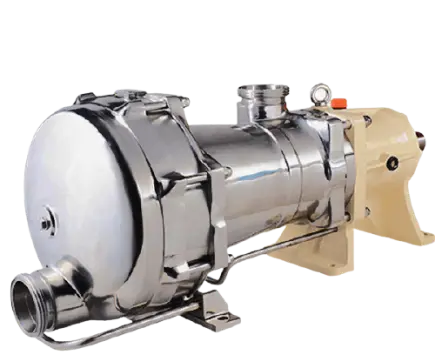

Официальный дистрибьютор насосного оборудования Mouvex на территории Украины
C марта 2020 наша компания ПРАЙТЕК имеет возможность предлагать своим клиентам оборудование производства французского завода MOUVEX. Данное предприятие было основано 1906 году и является частью корпорации PSG.
На сегодняшний день компания Mouvex — это мировой лидер по производству насосов и компрессоров для перекачивания различных жидкостей, и сухих сыпучих продуктов по всему миру.
Компания Mouvex® была основана инженером Андре Пети в 1906 году, после изучения проблем, с которыми сталкиваются пользователи шестеренных и роторных насосов при оптимизации своего процесса, в результате чего был изобретен эксцентриковый дисковый насос.
Все его преемники пошли по его стопам, включая его сына Альберта, который управлял компанией с 1938 года до тех пор, пока в 1998 году она не была поглощена Blackmer®.
Mouvex стала частью PSG® в 2008 году и в настоящее время работает на пяти континентах с глобальной сетью дистрибьюторов и производителей оригинального оборудования.
Шиберный ( пластинчатый) насос – разновидность объёмного насоса, основным органом которого является ротор с подвижными лопастями.
ЭКСЦЕНТРИКОВЫЕ ДИСКОВЫЕ НАСОСЫ СЕРИИ А
Производительность – до 55 м3/час (конструкция с механическим торцевым уплотнением)
Благодаря своей оригинальной конструкции, насос серии А является реверсивным — это дает возможность перекачивать жидкость в обоих направлениях.
• Высокая эффективность - уникальный принцип эксцентрикового диска обеспечивает плавность процесса перекачки
• (низкая скорость вращения) при высокой эффективности
• высокий уровень самовсасывания
• высокая прочность
• стабильный уровень производительности в течении длительного времени эксплуатации
• практически неограниченная сфера применения
ЭКСЦЕНТРИКОВЫЕ ДИСКОВЫЕ НАСОСЫ СЕРИИ С
Производительность – до 18 м3/час (конструкция БЕЗ механического торцевого уплотнения)
• Конструкция без уплотнения, что означает отсутствие утечек
• Самовсасывающий с высокой мощностью всасывания
• Возможность работать всухую
• Сохранение характеристик подачи / давления с течением времени за счет автоматической регулировки диска / цилиндра
• Возможность перекачивания продуктов с низкой и высокой вязкостью
• Выход не зависит от изменения вязкости
• Низкая линейная скорость
• Низкий уровень пульсации
ЭКСЦЕНТРИКОВЫЕ ДИСКОВЫЕ НАСОСЫ СЕРИИ SLC
Решение для химико-технологических процессов , требующих полной локализации продукта (до 45 м³ / ч )
• все комплектующие насоса изготовлены из нержавеющей стали
• отсутствие механического уплотнения и набивки
• точная дозировка
• высокий уровень самовсасывания
• максимальное выкачивание
• допустимый запуск на «сухую»
• стабильный уровень производительности в течении длительного времени эксплуатации
• выдающаяся объемная эффективность
• производительность не зависит от изменения вязкости
• низкая линейная скорость
• низкий пульсационный эффект
ЭКСЦЕНТРИКОВЫЕ ДИСКОВЫЕ НАСОСЫ СЕРИИ SLS (ГИГИЕНИЧЕСКОГО ИСПОЛНЕНИЯ)
Решение для продуктов, чувствительных к воздуху и требующих высоких санитарных стандартов (до 36 м3 / ч).
• гигиеническое исполнение
• работа без продукта в режиме всасывания до 5 минут
• высокий уровень самовсасывания
• улучшенная энергоэффективность
• без пульсационный поток для защиты чувствительных к сдвигу продуктов
• простое и экономичное обслуживание
• малое количество компонентов
• прост в установке
• очистка на месте (CIP) и дезинфекция на месте (SIP)
• конструкция диска Eccentric Disc обеспечивает равномерный поток и улучшенную экономию энергии
ЭКСЦЕНТРИКОВЫЕ ДИСКОВЫЕ НАСОСЫ СЕРИИ H-FLO
Производительность обеспечивает равномерный и эффективный поток с широким диапазоном вязкостей - до 65 м3/ч , 10 бар
• Эксцентриковая конструкция диска обеспечивает равномерный поток и улучшенную экономию энергии
• Чрезвычайно щадящий, безимпульсный поток для защиты чувствительных к сдвигу продуктов
• Сокращенное техническое обслуживание без механических уплотнений и зубчатых колес
• Простота установки
• Чистота на месте (CIP)
• Стерилизация на месте (SIP) для максимального удобства и чистоты
ЭКСЦЕНТРИКОВЫЕ ДИСКОВЫЕ НАСОСЫ СЕРИИ MICRO C
Ваше решение для непрерывного дозирования с низким расходом (менее 800 л/ч / 3,5 ГПМ).
• Герметичная перекачка без использования магнитных муфт или торцевых уплотнений
• Отличная самоподготовка
• Сухой ход
• Небольшие размеры и легкая интеграция
• Низкая скорость сдвига
• Выдающийся объемный КПД
• Перекачиваемый продукт постоянно обновляется
• Способность перекачивать продукты с низкой и высокой вязкостью
• Выход не зависит от изменения вязкости
• Низкая линейная скорость
• Легкая очистка (без зон удержания)
• Постоянная производительность с
ЭКСЦЕНТРИКОВЫЕ ДИСКОВЫЕ НАСОСЫ СЕРИИ G-FLO
Оптимальное решение для перекачивания при химико-технологических процессах с высокой производительностью - до 65 м3 / ч, 10 бар
Подходит для большинства химических и промышленных процессов, особенно тех, которые требуют постоянного не пульсирующего потока и бережного обращения с перекачиваемой средой
• Стабильная и эффективная производительность с широким диапазоном вязкости
• Конструкция эксцентрикового диска обеспечивает постоянный поток и повышенную экономию энергии
• Отсутствие пульсации
• Простая установка
ЭКСЦЕНТРИКОВЫЕ ДИСКОВЫЕ НАСОСЫ СЕРИИ S
Ваше решение для санитарных применений с очисткой на месте (C.O.P), требующее быстрого и простого демонтажа (до 12 м3/ч / 52 ГПМ).
• Герметичная перекачка без использования магнитных муфт или торцевых уплотнений
• Самовсасывание с сильной силой всасывания
• Способность дренировать трубопроводы (на входе и выходе)
• Сухой ход до пяти минут
• Низкая скорость сдвига
• Постоянная производительность с течением времени
• Выдающийся объемный КПД
• Перекачиваемый продукт постоянно обновляется
• Выход не зависит от изменения вязкости
• Низкая линейная скорость
• Низкий эффект пульсации